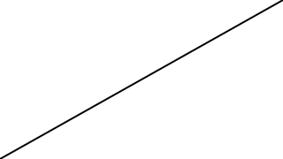

Visualization of complex concepts and systems aids in understanding. Static images or graphs are the method of choice and can be found everywhere - from textbooks over presentations to online websites.
While animations can often be more easy and quick to understand, their creation can seem intimidating and labor-intensive.
With this blog post I want to show you an easy way to create appealing animations. For this we will be using the Haskell library reanimate.
All posts of this series
Set-up
Reproducibility
For this blog post we use:
- stack for building our program (lts-16.6)
- reanimate-1.0.0.0
Setting up the project
First, we generate our project reanimateMe via stack:
stack new reanimateMe simple
cd reanimateMeThen, we download reanimate-1.0.0.0, so the version 1.0.0.0 of the reanimate, from hackage and untar it in the project directory:
tar -xvf reanimate-1.0.0.0.tar.gzThe cabal and stack file
After that, we modify the reanimateMe.cabal and stack.yaml file to contain the following content:
reanimateMe.cabal:
name: reanimateMe
version: 0.1.0.0
license: BSD3
build-type: Simple
cabal-version: >=1.10
executable reanimateMe
hs-source-dirs: src
main-is: Main.hs
default-language: Haskell2010
build-depends: base >= 4.7 && < 5
, reanimate-1.0.0.0
, reanimate-svgstack.yaml:
resolver: lts-16.6
packages:
- .
- reanimate-1.0.0.0
extra-deps:
- hgeometry-0.11.0.0@sha256:09ead201a6ac3492c0be8dda5a6b32792b9ae87cab730b8362d46ee8d5c2acb4
- hgeometry-combinatorial-0.11.0.0@sha256:03176f235a1c49a415fe1266274dafca84deb917cbcbf9a654452686b4cd2bfe
- reanimate-svg-0.11.0.0@sha256:17b1a884a4428854608dd64c0d1e15d1aca05c8bd84781e360a6793b58461dd0
- vinyl-0.13.0@sha256:0f247cd3f8682b30881a07de18e6fec52d540646fbcb328420049cc8d63cd407The src/Main.hs file
To obtain our first “Hello World!”-like animation, we type the following content into src/Main.hs:
#!/usr/bin/env stack
-- stack runghc --package reanimate
module Main ( main ) where
import Reanimate
import Reanimate.Builtin.Documentation
import Reanimate.Transition
main :: IO ()
main = reanimate $ docEnv $ playThenReverseA drawCircleWith this code we are able to use the reanimate interpreter or render an animation to a desired output format, e.g. .gif.
Interpreting the “Hello, World!” animation
The set-up is done and we are ready to use the reanimate interpreter. For this, we will build and install our program:
stack installAfter that, we can run our reanimate interpreter in two different ways:
stack src/Main.hsor
reanimateMe --self src/Main.hsThis will start the interpreter and the console output should look like this:
stack src/Main.hs
> 2020-12-20 09:49:38.08: Listening...
> 2020-12-20 09:49:40.09: Opening browser...
> 2020-12-20 09:49:40.22: Browser opened.
> 2020-12-20 09:49:40.45: New connection received.
> 2020-12-20 09:49:40.46: Reloading code...
> 2020-12-20 09:49:40.46: GHCi reload done.
> 2020-12-20 09:49:40.67: Framecount sent.
> 2020-12-20 09:49:40.86: GHCi render done.
> 2020-12-20 09:49:42.10: Compile done.
> 2020-12-20 09:49:42.13: Optimized render done.Additionally, the interpreter will open our default web browser to display an animation. The following image is a screenshot taken after the browser is opened:
Running the code using the interpreter is useful, because we can change the src/Main.hs file and the interpreter will show us the result (via the web browser), after we saved these changes. This will allow for quick prototyping of animations.
However, the interpreter will not generate any output file. If we want to save the animation in an output file, we have to render the animation.
Rendering the “Hello, World!” animation
Let’s render our “Hello, World!” animation as a .gif. This is done by using the render argument:
stack src/Main.hs -- render --format gifThis will output src/Main.gif and will look like this, when opened in your web browser or image viewer of your choice:
If you want to speed up the compile time significantly use the --compile flag:
stack src/Main.hs -- render --format gif --compileAs you can see, render allows for saving our animation into an output file.
A star is born
Equipped with this knowledge of how to interpret and render our code, we can start to create our own custom animation(s).
Let’s animate a star in two different ways:

Disclaimer: The first few lines of our Main.hs will always look like this:
#!/usr/bin/env stack
-- stack runghc --package reanimate
module Main( main ) where
import Reanimate
import Reanimate.Builtin.Documentation
import Reanimate.TransitionThe first two lines are needed for communicating with the interpreter of reanimate, so that we can see our changes in the source code live in our web browser. Additionally, we have the last three lines to import the necessary libraries.
Because these lines of code will always look the same, we will not show them in the following part.
Note: If you do not want to type or copy & paste all the code snippets in the blog post, you can always use the github repo of reanimateMe. Have a look at the different commits to follow along the steps of this blog post.
In the beginning there was a line
We will start simple, by animating a single line.
main :: IO ()
main = reanimate
$ docEnv
$ staticFrame 1
$ mkLine
(screenLeft, screenBottom)
(screenRight, screenTop )Here, mkLine is a function which takes two coordinates, a start and end coordinate of the line and returns a SVG. SVG is a crucial type in the reanimate library, because it represents “the thing we want to animate”. However, this SVG alone cannot be rendered by reanimate, because the reanimate function takes an Animation as input argument.
Hence, we need a function to transform a SVG to an Animation. To keep it simple, we will use the staticFrame function for this transformation.
Compile and run the above code (either using the interpreter or the renderer) to see a line from the bottom left to the top right corner of the animation:

As the staticFrame function suggests, nothing moves in this animation.
Now, let me give you some more details to the above code. staticFrame does not only take a SVG as an input but also a Duration. “But nothing is animated. Why do we have to pass a Duration?” This is because our final output will be a .gif, .mp4 or the result seen in the browser (interpreter). Although the line does not seem to move, we have to tell reanimate how long our animation has to last. This becomes particularly important for sequences of animations. In the above case, the Duration of the animation is 1 and represents the duration of the animation in seconds.
Then, there is the docEnv function, which enables the use of Main.hs with the reanimate interpreter in the browser.
Default coordinates in reanimate
The remaining functions in the above code, screenLeft, screenRight, screenBottom and screenTop, are built-in functions of reanimate. They represent the horizontal and vertical distance from the center of the animation.
By default the center is (0,0) and the aspect ratio is 16:9. This means that internal width of the animation is 16, while the height is 9.
If we want to know the left most value in this default setting, we can use screenLeft, which would be -8. Combining this with screenBottom, which is -4.5 (the bottom most value), results in the coordinate of the bottom left value (-8, -4.5). These are the coordinates we used in the above code as start coordinate in the form of (screenLeft, screenBottom).
Note: The default values for the aspect ratio can be changed using viewports via the withViewBox function, but this will be a topic for later blog posts.
I like to move it!
Now that we have created a static animation using staticFrame, it is time to animate it by modifying the above code to look like this:
main :: IO ()
main = reanimate
$ docEnv
$ animate
$ \t -> partialSvg t
$ pathify
customLine
customLine :: SVG
customLine = mkLine (screenLeft, screenBottom) (0, screenTop)Let me walk you through the code changes from the bottom to the top. First, we create a new SVG called customLine. This creates a different line than the one above. If we were to render this line with staticFrame, it would look like this:
This line represents the first of five lines for animating the final star.
The next steps in the code are:
$ animate
$ \t -> partialSvg t
$ pathifyThe idea behind these three lines of code is to transform our customLine, so a SVG, to an Animation using animate. This function has the following type signature:
animate :: (Time -> SVG) -> AnimationHence, we have to pass a function of type (Time -> SVG) to animate to obtain an Animation. This function will represent the way our SVG is animated. Because we want to draw a customLine in small increments over time, we first have to slice it up into small fragments. This is done using pathify. In the second step, we pass the sliced-up SVG to \t -> partialSvg t. This lambda function takes the current frame number and displays the SVG up to this point in the animation.
In our specific example, customLine is sliced-up into 60 fragments (pathify), which are continuously displayed (\t -> partialSvg t) in 60 frames (1 second).
The resulting animation will look like this:
We have our first animation with a duration of one second. Yeah!
More lines (Animations)
For our star we need four additional lines. Before creating these, we will define some helper functions to make our life easier.
First, we create some custom functions representing the coordinates of the five vertices of the star:
customHeigth = 1
leftBottom = (screenLeft , screenBottom)
middleTop = (0 , screenTop )
rightBottom = (screenRight , screenBottom)
leftCustom = (screenLeft , customHeigth)
rightCustom = (screenRight , customHeigth)Next, we implement a function, which creates an animated line like above, but for arbitrary start and end coordinates.
customDuration = 1
animatePart :: (Double, Double) -> (Double, Double) -> Animation
animatePart coord1 coord2 = setDuration customDuration $
animate
$ \t -> partialSvg t
$ pathify
$ mkLine coord1 coord2animatePart reuses the animate,partialSvg,pathify and mkLine pattern from before and extends it by setDuration. With setDuration we can vary the length of the created animation. For this tutorial, we will choose 1 as duration, which is the default value of animate.
Connecting Animations
With animatePart and the five coordinates at hand, we can create five Animations - one animation for each segment of the star:
ani1 = animatePart leftBottom middleTop
ani2 = animatePart middleTop rightBottom
ani3 = animatePart rightBottom leftCustom
ani4 = animatePart leftCustom rightCustom
ani5 = animatePart rightCustom leftBottomEach of these segments represent an animated line. The only thing left to do to obtain the final star is to connect these animations.
For this, reanimate provides so-called Transitions. Here are the type signatures of two of these Transitions:
andThen :: Animation -> Animation -> Animation -- or Transition
parA :: Animation -> Animation -> Animation -- or TransitionWith andThen we can connect Animations sequentially, while parA allows us to animate Animations in parallel.
Connecting two Animations
Before connecting all five Animations we will first connect two Animations. This can be done using andThen like this:
main :: IO ()
main = reanimate
$ docEnv (ani1 `andThen` ani2)With this, we obtain the following animation:
By using parA instead of andThen, we obtain this:
Connecting more than two Animations
Composing more than two Animations like in the above examples would become cumbersome and less expressive - we need some alternatives. The first alternative is chainT, which has the following type signature:
chainT :: Transition -> [Animation] -> AnimationGiven a Transition, chainT will apply this Transition to a list of Animations and return one final Animation.
Enough talking! Let’s use chainT in combination with andThen, which is a Transition, to animate our first star:
main :: IO ()
main = reanimate
$ docEnv
$ chainT andThen [ani1, ani2, ani3, ani4, ani5]The result will look like this:
Using parA instead of andThen, would result in this:
As you can see, connecting parA with chainT results in a much faster animation, which is due to a fault in the implementation of animatePart: customDuration is always 1, regardless of the number of Transitions used later on. While drawing each line will take one second, drawing them in parallel will also take just one second. To fix this for the parA part, we could choose customDuration to be 5. Resulting in an animation which takes as long as the andThen case.
A special alternative
In the case of chainT combined with andThen, we are using only primitive lines for constructing our star animation. reanimate provides mkLinePath to construct a SVG from a list of coordinates like this:
main :: IO ()
main = reanimate
$ docEnv
$ setDuration 5
$ animate
$ \t -> partialSvg t
$ pathify customPath
customPath :: SVG
customPath =
mkLinePath
[ leftBottom,
middleTop,
rightBottom,
leftCustom,
rightCustom,
leftBottom
]This code will result in the same animation as in the chainT andThen example above. The big difference, however, is that we construct our star-SVG using customPath and then apply pathify to the whole star instead of creating five different animations and connecting them using chainT andThen.
With this, we have reached our final goal - animating a star in two different ways.
Conclusion
reanimate provides expressive functions for the generation of animations. We learned how to animate lines and connect them in different ways. The final result are two different animations of the same star.
So far, we have only scratched the surface of reanimate. In future blog post we will learn a lot more about reaniamte.
Stay tuned and see you next time!
Appendix
Github repository
All code snippets can be found in this github repository. You can browse the commit history of src/Main.hs to run the code for every section of this blog post.
Installation (Manjaro Linux)
During the installation of chipmunk2D (a dependency of reanimate) the gcc compiler could not find sys/sysctl.sh. The reason for this was that the compiler was looking at /usr/include/sys for the library. In Manjaro Linux, however, this library is located at /usr/include/linux.
For solving this problem I generated a symbolic link like this:
mkdir -p /usr/include/sys
ln -s /usr/include/linux/sysctl.h /usr/include/sys/Don’t forget to use sudo if you don’t have permission to create the symbolic link!